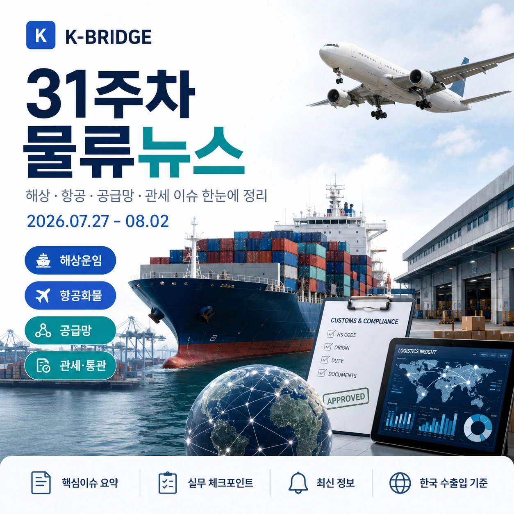
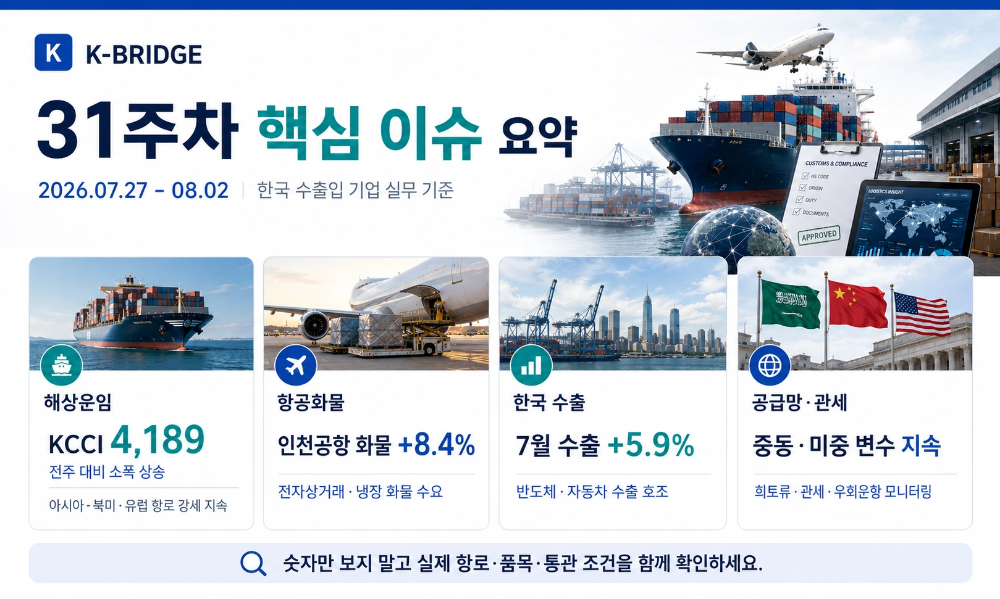
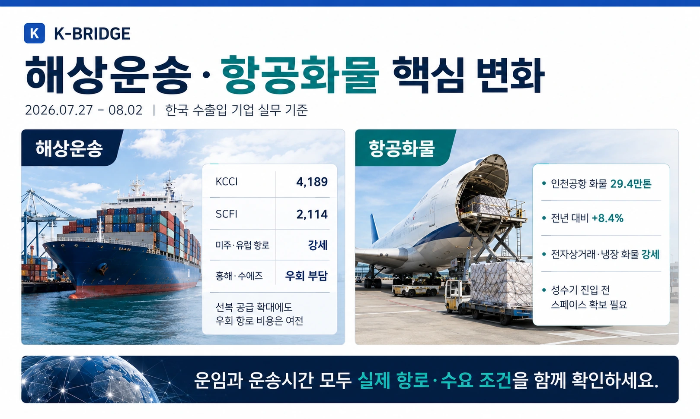
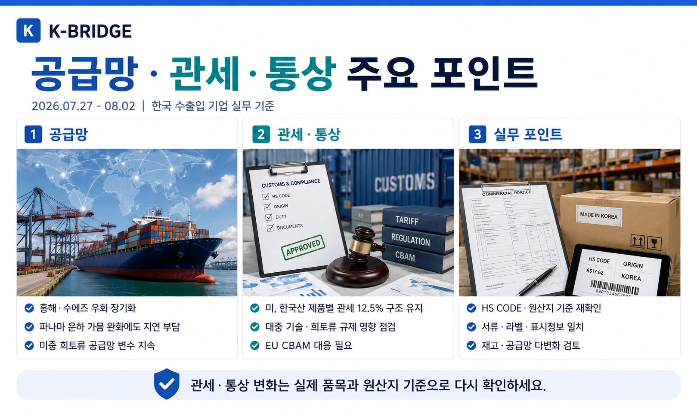
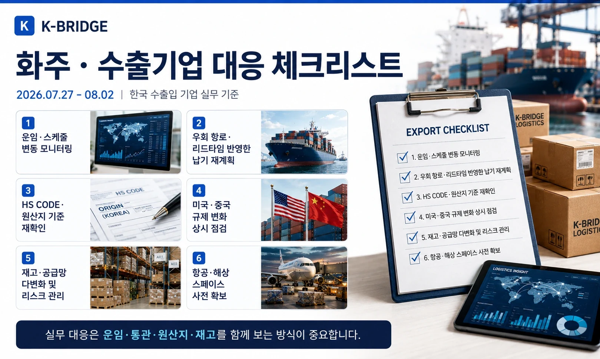

핵심 요약
31주차 물류시장은 부산발 컨테이너 운임의 3주 연속 조정, AI·반도체 중심 항공화물 수요 확대, 7월 한국 수출의 강한 증가세, 중동 에너지와 희토류를 둘러싼 공급망 리스크가 동시에 나타났습니다. 운임지수만 보기보다 항로·품목·원산지·조달선까지 함께 확인해야 하는 구간입니다.

31주차 시장 한눈에 보기
KCCI 종합은 다시 하락했지만 미주 동안과 중동·오세아니아는 상승했습니다. 동시에 한국의 7월 수출은 AI 투자에 따른 반도체와 컴퓨터 수요로 큰 폭 증가했고, 아시아 항공화물 시장에서는 AI 하드웨어가 중국 이커머스를 대신하는 핵심 성장동력으로 부상했습니다.
| 항로·지표 | 2026.07.27 | 전주 대비 | 실무 해석 |
|---|---|---|---|
| KCCI 종합 | 4,123 | -1.90% | 3주 연속 조정 |
| 미주 서안 | $6,115/FEU | -4.23% | 성수기 상승분 추가 조정 |
| 미주 동안 | $8,758/FEU | +0.74% | 장거리·선복 부담 지속 |
| 유럽 | $4,947/FEU | -4.57% | 운임 인상 효과 약화 |
| 지중해 | $6,107/FEU | -3.26% | 중동 위험비용 별도 확인 |
지표 기준: 7월 27일 KCCI 종합지수는 4,123으로 전주보다 81포인트 낮았습니다. 항로별 수치는 전주 공개값과 해진공이 발표한 주간 증감폭을 기준으로 정리했으며 실제 견적은 선사·출항일·장비·부대비용에 따라 달라집니다.

해상운송·중동 물류 이슈
KCCI 4,123 - 3주 연속 하락, 중동 항로는 상승
7월 27일 부산발 컨테이너해상운임종합지수(KCCI)는 전주보다 81포인트, 1.9% 내린 4,123을 기록했습니다. 미주 서안·북유럽·지중해 운임은 조정됐지만 미주 동안과 중동·오세아니아는 상승했습니다. SCFI도 7월 24일 기준 3,062.95로 전주보다 0.6% 하락했습니다.
바브엘만데브 통항 일부 회복 - 그러나 호르무즈는 여전히 제한적
7월 27일 바브엘만데브 해협 통항 선박은 28척으로 최근 며칠보다 늘었지만, 월중 고점인 46척에는 미치지 못했습니다. 반면 호르무즈 해협의 원자재 운반선 통항은 낮은 수준에 머물러 중동 전체 물류가 정상화됐다고 보기 어렵습니다.
이집트 다미에타항 드론 공격 - 수에즈·SUMED 보안 리스크 재부각
7월 30일 수에즈운하 인근 이집트 다미에타항에서 드론 공격으로 가스 운반선 2척이 손상됐다는 보도가 나왔습니다. 수에즈 운항이 직접 중단되지는 않았지만, 홍해와 수에즈·SUMED를 활용한 에너지 수송의 보험료·보안비용 변동성이 다시 커질 수 있습니다.
항공화물·수출 물동량
AI가 아시아 항공화물 성장축으로 - 대한항공 화물매출 46% 증가
Reuters에 따르면 대한항공의 2분기 화물매출은 1조5,400억원으로 전년 동기보다 46% 증가했습니다. AI 칩, 서버랙, 데이터센터 인프라가 중국발 이커머스를 대신해 핵심 성장동력으로 부상했고, HBM과 프로세서 주문은 2~3년까지 가시성이 확보된 것으로 설명됐습니다.
7월 수출 988.9억달러 - 반도체 +179%, 컴퓨터 +404%
7월 한국 수출은 988억9천만달러로 전년 동월보다 62.8% 증가했습니다. 반도체 수출은 179%, 컴퓨터 수출은 404% 늘었고, 대중 수출은 96%, 대미 수출은 69% 증가했습니다. 중동향 수출도 5개월 연속 감소 이후 25% 반등했습니다.
공급망·에너지 이슈
정부, 중동 재긴장에 원유 수급 긴급점검 - 대체 수송로·비중동산 확보
산업통상부는 정유·해운업계와 원유 수급을 점검했습니다. 7~8월 도입 원유는 전년 대비 100%를 초과해 확보했고 9월 물량도 90% 이상 확보한 상태지만, 홍해 얀부항과 주요 해상 수송로 위험에 대비해 수에즈·SUMED 우회, 비중동산 대체물량, 비축유 스와프를 준비하고 있습니다.
미·중 희토류 협의 - 중국의 공급 약속 이행 여부가 핵심 변수
미국 재무부와 USTR는 중국 측에 희토류와 농산물 관련 약속을 이행하라고 촉구했습니다. 미국은 중국이 희토류 공급 의무를 일부만 이행하고 있다고 보고 있으며, 중국의 최근 수출제한을 문제로 지적했습니다. 반도체·전기차·모터·방산 등 핵심광물 의존 업종의 공급망 불확실성이 이어지고 있습니다.
울산세관, 중동위기 대응 원유 수입선 다변화 지원
울산세관은 7월 27일 홍해 위기 대응과 캐나다산 원유 등 수입선 다변화 지원 동향을 공개했습니다. 국내 정유·석유화학 기업은 원유 조달국을 늘리는 동시에 항만·탱크터미널·보세구역의 반입 조건과 저장능력을 함께 점검할 필요가 있습니다.

관세·통상·원산지 이슈
미국, Section 301 후속 통상조사 계속 - 추가 조치 가능성 모니터링
USTR는 강제노동 관련 10~12.5% 관세 시행 이후에도 16개 경제권의 과잉생산능력을 겨냥한 별도 Section 301 조사가 진행 중이라고 밝혔습니다. 한국 기업은 현재 적용세율뿐 아니라 조사 대상 품목과 향후 추가 조치 가능성을 계약·원가 시나리오에 반영해야 합니다.
한-브라질 정상회담 - 메르코수르 무역협정·핵심광물 공급망 협력
한국과 브라질은 한-메르코수르 무역협정 추진 필요성에 공감하고, 핵심광물 공급망의 전 주기에 걸친 협력 확대를 논의했습니다. 협정은 아직 발효된 관세혜택이 아니므로 현재 거래에는 현행 관세율을 적용하되, 남미 조달·판매망 다변화의 중장기 기회로 검토할 수 있습니다.
비특혜 원산지 판정 통합안내 - 기준·사례·구비서류 한곳에서 확인
관세청은 7월 27일 비특혜 원산지 판정 정보를 통합 제공하는 안내 페이지를 운영한다고 밝혔습니다. 완전생산·실질적 변형·단순가공 기준, 판정 흐름도, 관련 법령, 신청 절차와 구비서류, 주요 사례를 한곳에서 확인할 수 있어 원산지 실무 대응이 쉬워집니다.
산업단지 입주 중소기업 수출실적 증명 개선 - 산업단지부호 327개 신설·개편
관세청은 산업단지 입주 지역 제조기업의 수출실적을 더 정확히 확인할 수 있도록 산업단지부호 327개를 신설하고 부호체계를 개편하기로 했습니다. 수출실적 증명과 지원사업 활용이 필요한 중소 제조기업은 사업장 정보와 산업단지 등록정보를 점검할 필요가 있습니다.
통상 주의: 관세·무역협정·수출통제는 발표·협상·시행·발효 단계가 서로 다릅니다. 견적과 계약에는 현재 시행 중인 세율을 적용하고, 협상 중인 제도는 별도 리스크 시나리오로 관리하세요.
이번 주 추가 물류 동향

화주·수출기업 대응 체크리스트
- 해상운송: KCCI 종합보다 실제 항로·선사·출항일 운임과 장비·Free Time을 확인합니다.
- 중동 리스크: Suez·SUMED·희망봉 우회, 전쟁위험 보험, 긴급할증과 리드타임을 함께 점검합니다.
- 항공화물: AI·반도체·서버·장비 화물은 선예약하고 대체 허브와 보안·충격관리 조건을 확인합니다.
- 수출 증가 대응: 반도체·컴퓨터 물량 증가에 따른 항공·해상 선복, 창고, 트럭 수요를 사전 확보합니다.
- 희토류: 중국산 핵심광물의 수출 라이선스, 납기, 재고와 대체 공급처를 확인합니다.
- 남미 통상: 메르코수르 협정은 체결·발효 전까지 현행 관세율로 원가를 계산합니다.
- 원산지: 비특혜 판정 기준과 BOM·제조공정·라벨·Invoice의 국가표기를 일치시킵니다.
- 통상 모니터링: 미국 Section 301 후속 조사와 품목별 추가 조치 가능성을 주기적으로 확인합니다.
운임·관세뿐 아니라 에너지와 핵심광물 공급망까지 함께 확인하세요
케이브릿지는 해상·항공·해외특송·국내운송과 통관 조건을 함께 검토해 품목과 납기에 맞는 운송안을 안내합니다.